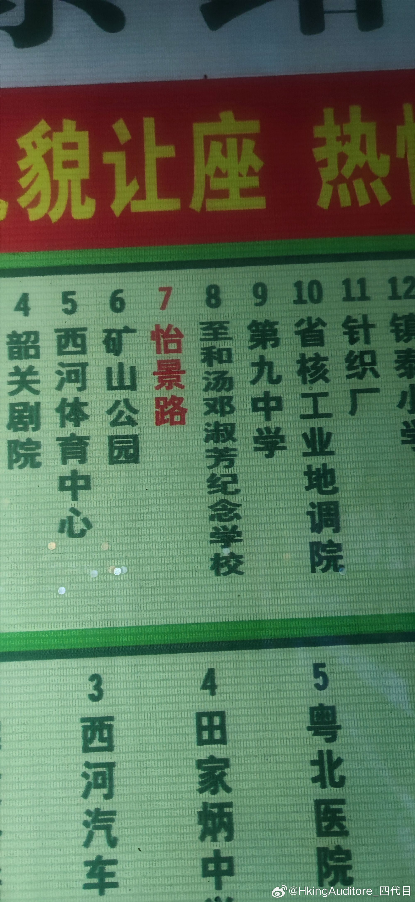

晚安
上上周回家的时候，在公交车站看到一个名叫“至和汤邓淑芳纪念学校”。但我在互联网上不管怎么搜索都找不到这前面一大串名字的信息。我以为是我孤陋寡闻，但是问了好多市区的同学都不知道这个名字。
这个学校没有官网，没有公众号，网上搜出来的第一条信息就是AI生成的假消息，一直翻到一篇2003年的新闻，才查到这个学校是香港一个名叫“至和坛”道教团体捐的。但“汤邓淑芳”又是谁呢？——很不幸，还是查不到一点消息。虽然人查不到，但是查到了香港有个同样冠名“汤邓淑芬纪念学校”的学校，但这个学校很早就停办了，官网也没有了。最后一直追查到fb，挖出了这个学校的社区，才从一个已经打不开的图片缓存里看到了一点本尊——的遗像。后面又找到同一个协会下名叫“陈吕重德纪念学校”的官网，校史上写着纪念时任会长的母亲，我又去查汤邓淑芬纪念学校建校时间和时任会长，确实姓汤，我才勉强猜出这件事的来龙去脉。我猜她是一位普通的母亲，我已无从得知她做过什么，但他儿子很爱她，以至于已两所以她为名的纪念学校。
但时过境迁，已经是互联网时代了，一所学校已经停办，一所学校没有信息，这位母亲虽然以她之名教化了几代学生，却在信息海洋留不下什么痕迹，甚至不如一个普通博主。
小时候被我爸灌输价值观，说人在世界上只为“留一个名字”，但绝大多数人类都是留不下什么“精神遗产”的。且不论是好名坏名，就是虚名也少见。我爸说人要著书立说，以至于我小时候觉得写本书下来就死而无憾了。
只不过后来这个目标变了，变成要做一个自己的游戏才能死而无憾。为人类留名太虚了，不如给自己的宇宙留点遗产。
上上周回家的时候，在公交车站看到一个名叫“至和汤邓淑芳纪念学校”。但我在互联网上不管怎么搜索都找不到这前面一大串名字的信息。我以为是我孤陋寡闻，但是问了好多市区的同学都不知道这个名字。
这个学校没有官网，没有公众号，网上搜出来的第一条信息就是AI生成的假消息，一直翻到一篇2003年的新闻，才查到这个学校是香港一个名叫“至和坛”道教团体捐的。但“汤邓淑芳”又是谁呢？——很不幸，还是查不到一点消息。虽然人查不到，但是查到了香港有个同样冠名“汤邓淑芬纪念学校”的学校，但这个学校很早就停办了，官网也没有了。最后一直追查到fb，挖出了这个学校的社区，才从一个已经打不开的图片缓存里看到了一点本尊——的遗像。后面又找到同一个协会下名叫“陈吕重德纪念学校”的官网，校史上写着纪念时任会长的母亲，我又去查汤邓淑芬纪念学校建校时间和时任会长，确实姓汤，我才勉强猜出这件事的来龙去脉。我猜她是一位普通的母亲，我已无从得知她做过什么，但他儿子很爱她，以至于已两所以她为名的纪念学校。
但时过境迁，已经是互联网时代了，一所学校已经停办，一所学校没有信息，这位母亲虽然以她之名教化了几代学生，却在信息海洋留不下什么痕迹，甚至不如一个普通博主。
小时候被我爸灌输价值观，说人在世界上只为“留一个名字”，但绝大多数人类都是留不下什么“精神遗产”的。且不论是好名坏名，就是虚名也少见。我爸说人要著书立说，以至于我小时候觉得写本书下来就死而无憾了。
只不过后来这个目标变了，变成要做一个自己的游戏才能死而无憾。为人类留名太虚了，不如给自己的宇宙留点遗产。
- 